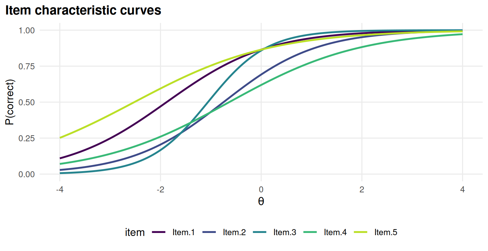
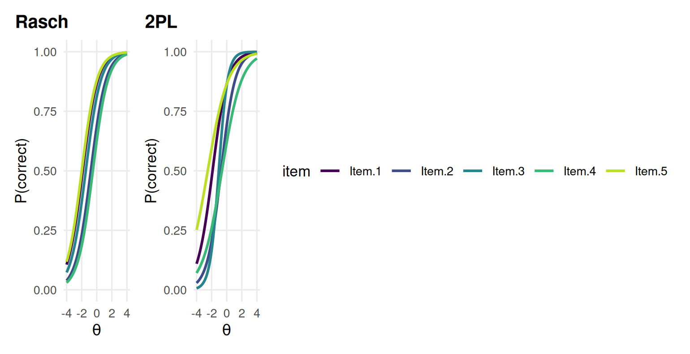
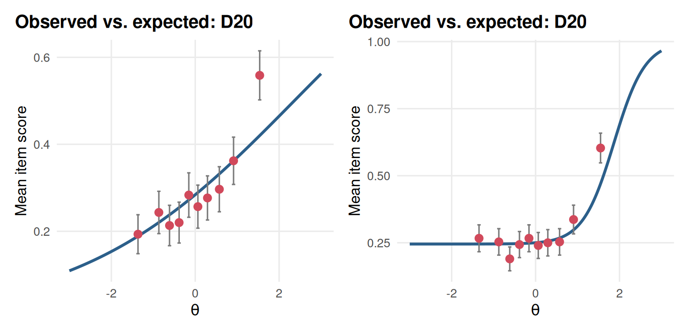

Chapter 2 The Rasch, 2PL and 3PL models
Learning goals. After this chapter you can
- explain what a latent trait is and why IRT puts people and items on the same scale;
- write down the Rasch, 2PL and 3PL models and say what each parameter does to the item characteristic curve;
- fit the three models with
mirt()and read their parameters in the traditional IRT metric; - describe an item in words from its curve.
Key terms: item response theory, latent trait, logit, Rasch model, 2PL, 3PL, item characteristic curve, difficulty, discrimination, guessing, slope-intercept form.
2.1 The ideas
IRT assumes that a person’s responses depend on an unobserved latent trait \(\theta\) (theta): Ability, knowledge, an attitude. By convention \(\theta\) has mean 0 and standard deviation 1 in the calibration group, so a person at \(\theta = 1\) is one standard deviation above average.
Each item gets an item characteristic curve (ICC): The probability of a correct answer as a function of \(\theta\). The three classic models differ in how many parameters shape that curve (Hambleton et al. 1991; Embretson and Reise 2000).
The Rasch (1PL) model has one parameter per item, the difficulty \(b_j\):
\[P(X_{ij} = 1 \mid \theta_i) = \frac{\exp(\theta_i - b_j)}{1 + \exp(\theta_i - b_j)}.\]
The difficulty is the point on the \(\theta\) scale where the probability is 0.5. All curves have the same slope, so they never cross, and the sum score contains all the information about \(\theta\).
The two-parameter logistic (2PL) model adds a discrimination \(a_j\):
\[P(X_{ij} = 1 \mid \theta_i) = \frac{\exp[a_j(\theta_i - b_j)]}{1 + \exp[a_j(\theta_i - b_j)]}.\]
A larger \(a_j\) gives a steeper curve: The item separates people just below \(b_j\) from people just above it more sharply. Values between about 0.8 and 2.5 are typical for good achievement items; values below about 0.5 mean the item hardly tells people apart.
The three-parameter logistic (3PL) model adds a lower asymptote \(c_j\), often called the guessing parameter:
\[P(X_{ij} = 1 \mid \theta_i) = c_j + (1 - c_j)\frac{\exp[a_j(\theta_i - b_j)]}{1 + \exp[a_j(\theta_i - b_j)]}.\]
Even very low-ability people get a multiple-choice item right with probability \(c_j\), roughly one over the number of options if they guess at random. With a lower asymptote, \(b_j\) is where the probability is \((1 + c_j)/2\) rather than 0.5.
mirt estimates the models in slope-intercept form,
\(a_j\theta_i + d_j\), which behaves better numerically. The two forms are
related by \(b_j = -d_j / a_j\). Use coef(mod, IRTpars = TRUE), or
mirtverse’s tidy() (which uses IRTpars = TRUE by default), to see \(a\) and
\(b\).
2.2 Example 1: The LSAT section 7 items
LSAT7 holds the response patterns of 1,000 people to five items from a
section of the Law School Admission Test, stored as a frequency table.
expand.table() turns it into one row per person.
We fit the three models. itemtype chooses the model and verbose = FALSE
hides the iteration history.
rasch <- mirt(resp, 1, itemtype = "Rasch", verbose = FALSE)
twopl <- mirt(resp, 1, itemtype = "2PL", verbose = FALSE)
threepl <- mirt(resp, 1, itemtype = "3PL", verbose = FALSE)The item parameters in the IRT metric:
coef(twopl, IRTpars = TRUE, simplify = TRUE)$items
#> a b g u
#> Item.1 0.988 -1.879 0 1
#> Item.2 1.081 -0.748 0 1
#> Item.3 1.706 -1.058 0 1
#> Item.4 0.765 -0.635 0 1
#> Item.5 0.736 -2.520 0 1The columns g and u are the lower and upper asymptotes, fixed at 0 and 1
for the 2PL. The same information as a tidy table, ready for a report:
tidy(twopl)
#> # A tibble: 10 × 5
#> item itemtype term estimate std.error
#> <chr> <chr> <chr> <dbl> <dbl>
#> 1 Item.1 2PL a 0.988 NA
#> 2 Item.1 2PL b -1.88 NA
#> 3 Item.2 2PL a 1.08 NA
#> 4 Item.2 2PL b -0.748 NA
#> 5 Item.3 2PL a 1.71 NA
#> 6 Item.3 2PL b -1.06 NA
#> 7 Item.4 2PL a 0.765 NA
#> 8 Item.4 2PL b -0.635 NA
#> 9 Item.5 2PL a 0.736 NA
#> 10 Item.5 2PL b -2.52 NAAll five items have negative difficulties: This is an easy section for this group. Item 3 has the steepest slope, items 4 and 5 the flattest. The curves show it at a glance.

Figure 2.1: Item characteristic curves of the 2PL model for the five LSAT7 items.
Compare the Rasch curves, which are parallel by construction, with the 2PL curves, which are not:
library(patchwork)
(gg_trace(rasch, facet = FALSE) + ggplot2::ggtitle("Rasch")) +
(gg_trace(twopl, facet = FALSE) + ggplot2::ggtitle("2PL")) +
plot_layout(guides = "collect")
Figure 2.2: Rasch curves (left) are parallel by construction; 2PL curves (right) can differ in slope.
The 3PL adds a lower asymptote for each item. With only five easy items there
is very little information about what low-ability people do. Look at the \(c\)
estimates (g) and their confidence intervals:
threepl_se <- mirt(resp, 1, itemtype = "3PL", SE = TRUE, verbose = FALSE)
tidy(threepl_se, conf.int = TRUE) |> subset(term == "g")
#> # A tibble: 5 × 7
#> item itemtype term estimate std.error conf.low conf.high
#> <chr> <chr> <chr> <dbl> <dbl> <dbl> <dbl>
#> 1 Item.1 3PL g 0.0000703 0.00930 -0.0182 0.0183
#> 2 Item.2 3PL g 0.295 0.140 0.0209 0.569
#> 3 Item.3 3PL g 0.000258 0.0278 -0.0543 0.0548
#> 4 Item.4 3PL g 0.0000506 0.00435 -0.00847 0.00857
#> 5 Item.5 3PL g 0.000155 0.0209 -0.0408 0.0411Four of the five lower asymptotes sit at essentially zero, on the boundary of the parameter space, and the one that does not (Item 2) has a confidence interval that runs from almost 0 to well over 0.5. The data say very little about guessing. Which model should we report? That is a question for Chapter 3. For now, notice that a model with more parameters is not automatically better: It has to be supported by the data.
interpret() describes the fitted model in plain language. Its Items
section is a useful check on your own reading of the curves.
interpret(twopl)
#> Overview
#> --------
#> * A 2PL model with 1 dimension was fitted to 1000 respondents and 5 items (EM
#> estimation).
#> * The estimation converged normally.
#>
#> Model fit
#> ---------
#> * Overall model fit is close: M2 = 11.94, df = 5, RMSEA = 0.037, CFI = 0.968,
#> SRMSR = 0.032.
#> * The chi-square test is significant, but with large samples this is common;
#> the RMSEA indicates the misfit is small in practical terms.
#>
#> Reliability
#> -----------
#> * Marginal reliability is 0.44 (low).
#> * Scores are too imprecise for decisions about individuals; consider adding
#> items or using the scores only for group-level summaries.
#>
#> Targeting
#> ---------
#> * The average item location is -1.37 and the average person score is 0.00, so
#> the test is relatively easy for this group.
#> * Measurement is most precise around theta = -1.08 (information = 1.47, SE =
#> 0.83).
#>
#> Items
#> -----
#> * Low item-total correlation: Item.5 (r = 0.17). These items relate weakly to
#> the rest of the test.
#> * Misfit: Item.2 (S-X2 p < .001). The model does not describe responses to
#> these items well (alpha = 0.01); inspect them with gg_empirical() or
#> item_card().
#>
#> Local dependence
#> ----------------
#> * No item pairs show signs of local dependence (Q3).
#>
#> Person fit
#> ----------
#> * 2.1% of respondents have unusual response patterns (Zh < -1.96), which is
#> within what chance alone would produce.2.3 Example 2: A driving theory test with guessing
To see when the 3PL matters, we simulate a 20-item driving theory test with four options per question, taken by 3,000 learner drivers. Because we simulate, we know the true parameters and can check how well each model recovers them.
# Simulated 20-item, four-option test with real guessing (c around 0.2).
set.seed(202)
n_items <- 20
true <- data.frame(a = rlnorm(n_items, 0.2, 0.25),
b = seq(-1.5, 2, length.out = n_items),
c = rbeta(n_items, 5, 17))
resp <- simdata(a = matrix(true$a), d = matrix(-true$a * true$b),
N = 3000, itemtype = "3PL", guess = true$c)
colnames(resp) <- sprintf("D%02d", 1:n_items)The data chunk converts the true \(b\) into an intercept with \(d = -ab\),
because simdata() uses the slope-intercept form.
fit2 <- mirt(resp, 1, itemtype = "2PL", verbose = FALSE)
fit3 <- mirt(resp, 1, itemtype = "3PL", verbose = FALSE)
est2 <- coef(fit2, IRTpars = TRUE, simplify = TRUE)$items
est3 <- coef(fit3, IRTpars = TRUE, simplify = TRUE)$items
recovery <- data.frame(
model = rep(c("2PL", "3PL"), each = 2),
parameter = rep(c("a", "b"), 2),
bias = c(mean(est2[, "a"] - true$a), mean(est2[, "b"] - true$b),
mean(est3[, "a"] - true$a), mean(est3[, "b"] - true$b)),
rmse = c(sqrt(mean((est2[, "a"] - true$a)^2)), sqrt(mean((est2[, "b"] - true$b)^2)),
sqrt(mean((est3[, "a"] - true$a)^2)), sqrt(mean((est3[, "b"] - true$b)^2))))
recovery
#> model parameter bias rmse
#> 1 2PL a -0.4681 0.583
#> 2 2PL b -0.5731 0.698
#> 3 3PL a 0.0622 0.338
#> 4 3PL b -0.0188 0.379When people really do guess, the 2PL absorbs the guessing into the other parameters: It underestimates discrimination and makes hard items look easier than they are. The 3PL recovers the parameters much better, and its lower asymptotes are close to the truth on average:
c(mean_true_c = mean(true$c), mean_estimated_c = mean(est3[, "g"]))
#> mean_true_c mean_estimated_c
#> 0.239 0.226The empirical item curve makes the problem visible. For the hardest item, the observed proportions correct for low-ability groups sit well above the 2PL curve, which heads towards zero:

Figure 2.3: Empirical item curve of the hardest driving-test item, D20, under the 2PL (left) and the 3PL (right).
What to take away. The 3PL is worth its extra parameters when items can be answered by guessing and there are enough low-ability test takers to estimate the lower asymptote: Here 3,000 people and a range of difficulties. With small samples or easy tests, \(c\) is poorly determined, and a 2PL (or a 3PL with a prior on \(c\)) is often the safer choice.
2.4 Your turn
- Using the 2PL for
LSAT7, compute by hand the probability that a person at \(\theta = -1\) answers Item 3 correctly. Check your answer withprobtrace(extract.item(twopl, 3), -1). - Fit the Rasch model to
LSAT7and compare its difficulties with the 2PL difficulties. Which item moves most, and why? - In Example 2, refit the 3PL using only the first 300 test takers. What happens to the recovery of \(c\)?
- Sketch (on paper) the curve of an item with \(a = 0.3\) and \(b = 0\). Would you keep this item on a test used to award licences?
Solutions
p <- coef(twopl, IRTpars = TRUE, simplify = TRUE)$items
plogis(p["Item.3", "a"] * (-1 - p["Item.3", "b"]))
#> [1] 0.525
probtrace(extract.item(twopl, 3), matrix(-1))
#> P.0 P.1
#> [1,] 0.475 0.525
pr <- coef(rasch, IRTpars = TRUE, simplify = TRUE)$items
round(cbind(rasch = pr[, "b"], twopl = p[, "b"]), 2)
#> rasch twopl
#> Item.1 -1.87 -1.88
#> Item.2 -0.79 -0.75
#> Item.3 -1.46 -1.06
#> Item.4 -0.52 -0.64
#> Item.5 -1.99 -2.52
small <- mirt(resp[1:300, ], 1, itemtype = "3PL", verbose = FALSE)
summary(coef(small, IRTpars = TRUE, simplify = TRUE)$items[, "g"] - true$c)
#> Min. 1st Qu. Median Mean 3rd Qu. Max.
#> -0.3425 -0.0895 0.0558 0.0270 0.1615 0.3461- Items whose 2PL slope is far from the common Rasch slope move most, here Item 3 (the steepest) and Item 5 (one of the flattest). A flat item (small \(a\)) has a 2PL difficulty further from zero, because its curve only reaches 0.5 far out on the scale.
- You may first see a warning that the EM algorithm stopped after 500 cycles: The 3PL is hard to estimate in small samples (Chapter 3). With 300 people the \(c\) estimates scatter much more widely around the truth, and some may be close to 0 or implausibly large. The estimates of \(a\) and \(b\) get worse too, because the three parameters trade off.
- The curve is almost flat: The chance of a correct answer barely depends on ability. Such an item adds little information and some noise; it should go back to the item writers.
In the lab
Lab 1, run_lab("model-choice"), asks you to compare the Rasch, 2PL and 3PL
models for a real-sized certification exam and to defend your choice to the
board. Chapter 3 gives you the tools for that comparison.